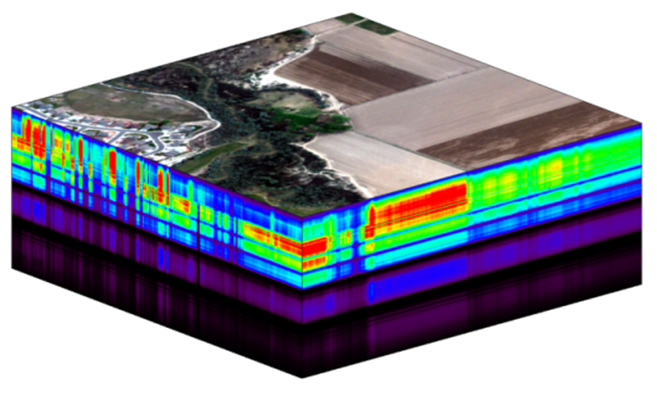
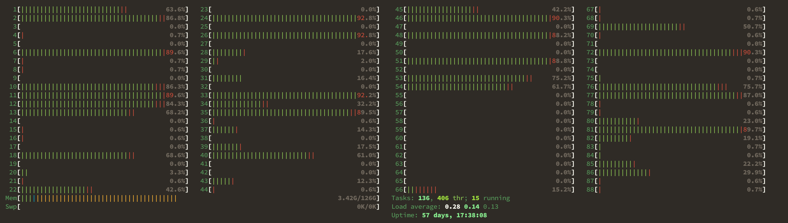
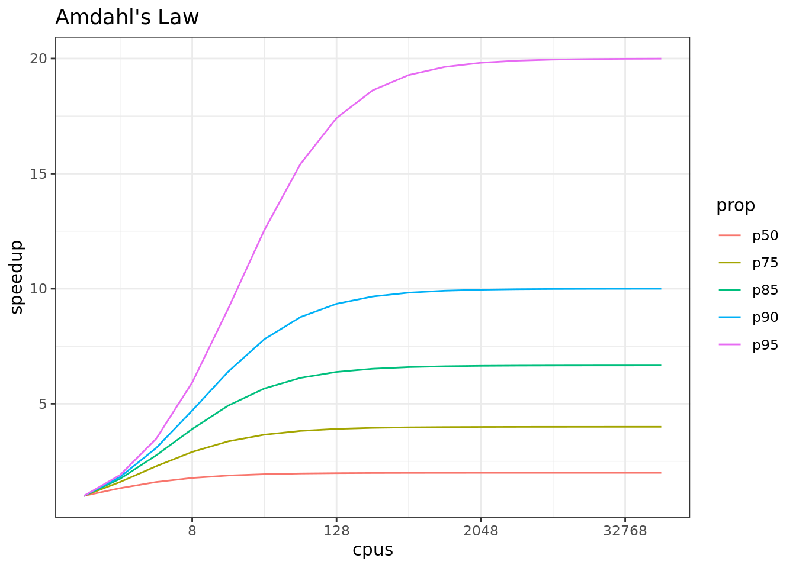

def task(x):
import numpy as np
result = np.arange(x*10**8).sum()
return result4 Pleasingly Parallel Programming
4.1 Learning Objectives
- Understand what parallel computing is and when it may be useful
- Understand how parallelism can work
- Review sequential loops and map functions
- Build a parallel program using
concurrent.futures - Build a parallel program using
parsl - Understand Thread Pools and Process pools
4.2 Introduction
Processing large amounts of data with complex models can be time consuming. New types of sensing means the scale of data collection today is massive. And modeled outputs can be large as well. For example, here’s a 2 TB (that’s Terabyte) set of modeled output data from Ofir Levy et al. 2016 that models 15 environmental variables at hourly time scales for hundreds of years across a regular grid spanning a good chunk of North America:

There are over 400,000 individual netCDF files in the Levy et al. microclimate data set. Processing them would benefit massively from parallelization.
Alternatively, think of remote sensing data. Processing airborne hyperspectral data can involve processing each of hundreds of bands of data for each image in a flight path that is repeated many times over months and years.

4.3 Why parallelism?
Much R code runs fast and fine on a single processor. But at times, computations can be:
- cpu-bound: Take too much cpu time
- memory-bound: Take too much memory
- I/O-bound: Take too much time to read/write from disk
- network-bound: Take too much time to transfer
To help with cpu-bound computations, one can take advantage of modern processor architectures that provide multiple cores on a single processor, and thereby enable multiple computations to take place at the same time. In addition, some machines ship with multiple processors, allowing large computations to occur across the entire set of those processors. Plus, these machines also have large amounts of memory to avoid memory-bound computing jobs.
4.4 Processors (CPUs), Cores, and Threads
A modern CPU (Central Processing Unit) is at the heart of every computer. While traditional computers had a single CPU, modern computers can ship with mutliple processors, each of which in turn can contain multiple cores. These processors and cores are available to perform computations. But, just what’s the difference between processors and cores? A computer with one processor may still have 4 cores (quad-core), allowing 4 (or possibly more) computations to be executed at the same time.

Microprocessor: an integrated circuit that contains the data processing logic and control for a computer.
Multi-core processor: a microprocessor containing multiple processing units (cores) on a single integrated circuit. Each core in a multi-core processor can execute program instructions at the same time.
Process: an instance of a computer program (including instructions, memory, and other resources) that is executed on a microprocessor.
Thread: a thread of execution is the smallest sequence of program instructions that can be executed independently, and is typically a component of a process. The threads in a process can be executed concurrently and typically share the same memory space. They are faster to create than a process.
Cluster: a set of multiple, physically distinct computing systems, each with its own microprocessors, memory, and storage resources, connected together by a (fast) network that allows the nodes to be viewed as a single system.
A typical modern computer has multiple cores, ranging from one or two in laptops to thousands in high performance compute clusters. Here we show four quad-core processors for a total of 16 cores in this machine.

You can think of this as allowing 16 computations to happen at the same time. Theroetically, your computation would take 1/16 of the time (but only theoretically, more on that later).
Historically, many languages only utilized one processor, which makes them single-threaded. Which is a shame, because the 2019 MacBook Pro that I am writing this on is much more powerful than that, and has mutliple cores that would support concurrent execution of multiple threads:
jones@powder:~$ sysctl hw.ncpu hw.physicalcpu
hw.ncpu: 12
hw.physicalcpu: 6To interpret that output, this machine powder has 6 physical CPUs, each of which has two processing cores, for a total of 12 cores for computation. I’d sure like my computations to use all of that processing power. Because its all on one machine, we can easily use multicore processing tools to make use of those cores. Now let’s look at the computational server included-crab at NCEAS:
jones@included-crab:~$ lscpu | egrep 'CPU\(s\)|per core|per socket'
CPU(s): 88
On-line CPU(s) list: 0-87
Thread(s) per core: 1
Core(s) per socket: 1
NUMA node0 CPU(s): 0-87Now that’s more compute power! included-crab has 384 GB of RAM, and ample storage. All still under the control of a single operating system.
Finally, maybe one of these NSF-sponsored high performance computing clusters (HPC) is looking attractive about now:
- Stampede2 at TACC
- 4200 KNL nodes: 285,600 cores
- 1736 SKX nodes: 83,328 cores
- 224 ICX nodes: 17,920 cores
- TOTAL: 386,848 cores
- Delta at NCSA
- 124 CPU Milan nodes (15,872 cores)
- 100 quad A100 GPU nodes (6400 cores + 400 GPUs)
- 100 quad A40 GPU nodes (6400 cores + 400 GPUs)
- 5 eight-way A100 GPU nodes (640 cores + 40 GPUs):
- 1 MI100 GPU node (128 cores + 8 GPUs)
- 7 PB of disk-based Lustre storage
- 3 PB of flash based storage
- TOTAL: 29,440 cores, 848 gpus

Note that these clusters have multiple nodes (hosts), and each host has multiple cores. So this is really multiple computers clustered together to act in a coordinated fashion, but each node runs its own copy of the operating system, and is in many ways independent of the other nodes in the cluster. One way to use such a cluster would be to use just one of the nodes, and use a multi-core approach to parallelization to use all of the cores on that single machine. But to truly make use of the whole cluster, one must use parallelization tools that let us spread out our computations across multiple host nodes in the cluster.
4.5 Parallel processing in the shell
Shell programming helps massively speed up data management tasks, and even more so with simple use of the GNU parallel utility to execute bash commands in parallel. In its simplest form, this can be used to speed up common file operations, such as renaming, compression, decompression, and file transfer. Let’s look at a common example – calculating checksums to verify file integrity for data files. Calculating a hash checksum using the shasum command can be time consuming, especially when you have a lot of large files to work on. But it is a classic processor-limited task, and one that can be massively faster using parallel.
$ for fn in `ls *.gpkg`; do shasum -a 256 ${fn}; done
real 35.081s
user 32.745s
system 2.336s
$ ls *.gpkg | parallel "shasum -a 256 {}"
real 2.97s
user 37.16s
system 2.70sThe first invocation takes 35 seconds to execute the tasks one at a time serially, while the second version only takes 🎉 3 seconds 🎉 to do the same tasks. Note that the computational time spent in user and system processing is about the same, with the major difference being that the user-space tasks were conducted on multiple cores in parallel, resulting in more than 10x faster performance, Using htop, you can see processor cores spiking in usage when the command is run:

4.6 Modes of parallelization
Several different approaches can be taken to structuring a computer program to take advantage of the hardware capabilities of multi-core processors. In the typical, and simplest, case, each task in a computation is executed serially in order of first to last. The total computation time is the sum of the time of all of the subtasks that are executed. In the next figure, a single core of the processor is used to sequentially execute each of the five tasks, with time flowing from left to right.

In comparison, the middle panel shows two approaches to parallelization on a single computer: Parallel Threads and Parallel Processes. With multi-threaded execution, a separate thread of execution is created for each of the 5 tasks, and these are executed concurrently on 5 of the cores of the processor. All of the threads are in the same process and share the same memory and resources, so one must take care that they do not interfere with each other.
With multi-process execution, a separate process is created for each of the 5 tasks, and these are executed concurrently on the cores of the processor. The difference is that each process has it’s own copy of the program memory, and changes are merged when each child process completes. Because each child process must be created and resources for that process must be marshalled and unmarshalled, there is more overhead in creating a process than a thread. “Marshalling” is the process of transforming the memory representation of an object into another format, which allows communication between remote objects by converting an object into serialized form.
Finally, cluster parallel execution is shown in the last panel, in which a cluster with multiple computers is used to execute multiple processes for each task. Again, there is a setup task associated with creating and mashaling resources for the task, which now includes the overhead of moving data from one machine to the others in the cluster over the network. This further increases the cost of creating and executing multiple processes, but can be highly advantageous when accessing exceedingly large numbers of processing cores on clusters.
The key to performance gains is to ensure that the overhead associated with creating new threads or processes is small relative to the time it takes to perform a task. Somewhat unintuitively, when the setup overhead time exceeds the task time, parallel execution will likely be slower than serial.
4.7 Task parallelization in Python
Python also provides a number of easy to use packages for concurrent processing. We will review two of these, concurrent.futures and parsl, to show just how easy it can be to parallelize your programs. concurrent.futures is built right into the python3 release, and is a great starting point for learning concurrency.
We’re going to start with a task that is a little expensive to compute, and define it in a function. All this task(x) function does is to use numpy to create a fairly large range of numbers, and then sum them.
We can start by executing this task function serially ten times with varying inputs. In this case, we create a function run_serial that takes a list of inputs to be run, and it calls the task function for each of those inputs. The @timethis decorator is a simple way to wrap the function with timing code so that we can see how long it takes to execute.
import numpy as np
@timethis
def run_serial(task_list):
return [task(x) for x in task_list]
run_serial(np.arange(10))run_serial: 7203.744888305664 ms[0,
4999999950000000,
19999999900000000,
44999999850000000,
79999999800000000,
124999999750000000,
179999999700000000,
244999999650000000,
319999999600000000,
404999999550000000]In this case, it takes around 25 seconds to execute 10 tasks, depending on what else is happening on the machine and network.
So, can we make this faster using a multi-threaded parallel process? Let’s try with concurrent.futures. The main concept in this package is one of a future, which is a structure which represents the value that will be created in a computation in the future when the function completes execution. With concurrent.futures, tasks are scheduled and do not block while they await their turn to be executed. Instead, threads are created and executed asynchronously, meaning that the function returns it’s future potentially before the thread has actually been executed. Using this approach, the user schedules a series of tasks to be executed asynchronously, and keeps track of the futures for each task. When the future indicates that the execution has been completed, we can then retrieve the result of the computation.
In practice this is a simple change from our serial implementation. We will use the ThreadPoolExecutor to create a pool of workers that are available to process tasks. Each worker is set up in its own thread, so it can execute in parallel with other workers. After setting up the pool of workers, we use concurrent.futures map() to schedule each task from our task_list (in this case, an input value from 1 to 10) to run on one of the workers. As for all map() implementations, we are asking for each value in task_list to be executed in the task function we defined above, but in this case it will be executed using one of the workers from the executor that we created.
from concurrent.futures import ThreadPoolExecutor
@timethis
def run_threaded(task_list):
with ThreadPoolExecutor(max_workers=20) as executor:
return executor.map(task, task_list)
results = run_threaded(np.arange(10))
[x for x in results]run_threaded: 4440.109491348267 ms
[0,
4999999950000000,
19999999900000000,
44999999850000000,
79999999800000000,
124999999750000000,
179999999700000000,
244999999650000000,
319999999600000000,
404999999550000000]This execution took about 🎉 4 seconds 🎉, which is about 6.25x faster than serial. Congratulations, you wrote your a multi-threaded python program!
4.8 Exercise: Parallel downloads
In this exercise, we’re going to parallelize a simple task that is often very time consuming – downloading data. And we’ll compare performance of simple downloads using first a serial loop, and then using two parallel execution libraries: concurrent.futures and parsl. We’re going to see an example here where parallel execution won’t always speed up this task, as this is likely an I/O bound task if you’re downloading a lot of data. But we still should be able to speed things up a lot until we hit the limits of our disk arrays.
The data we are downloading is a pan-Arctic time series of TIF images containing rasterized Arctic surface water indices from:
Elizabeth Webb. 2022. Pan-Arctic surface water (yearly and trend over time) 2000-2022. Arctic Data Center doi:10.18739/A2NK3665N.

First, let’s download the data serially to set a benchmark. The data files are listed in a table with their filename and identifier, and can be downloaded directly from the Arctic Data Center using their identifier. To make things easier, we’ve already provided a data frame with the names and identifiers of each file that could be downloaded.
| filename | identifier | |
|---|---|---|
| 0 | SWI_2007.tif | urn:uuid:5ee72c9c-789d-4a1c-95d8-cb2b24a20662 |
| 1 | SWI_2019.tif | urn:uuid:9cd1cdc3-0792-4e61-afff-c11f86d3a9be |
| 2 | SWI_2021.tif | urn:uuid:14e1e509-77c0-4646-9cc3-d05f8d84977c |
| 3 | SWI_2020.tif | urn:uuid:1ba473ff-8f03-470b-90d1-7be667995ea1 |
| 4 | SWI_2001.tif | urn:uuid:85150557-05fd-4f52-8bbd-ec5a2c27e23d |
4.8.1 Serial
When you have a list of repetitive tasks, you may be able to speed it up by adding more computing power. If each task is completely independent of the others, then it is pleasingly parallel and a prime candidate for executing those tasks in parallel, each on its own core. For example, let’s build a simple loop that downloads the data files that we need for an analysis. First, we start with the serial implementation.
import urllib
def download_file(row):
service = "https://arcticdata.io/metacat/d1/mn/v2/object/"
pid = row[1]['identifier']
filename = row[1]['filename']
url = service + pid
print("Downloading: " + filename)
msg = urllib.request.urlretrieve(url, filename)
return filename
@timethis
def download_serial(table):
results = [download_file(row) for row in table.iterrows()]
return results
results = download_serial(file_table[0:5])
print(results)Downloading: SWI_2007.tif
Downloading: SWI_2019.tif
Downloading: SWI_2021.tif
Downloading: SWI_2020.tif
Downloading: SWI_2001.tif
download_serial: 53322.73316383362 ms
['SWI_2007.tif', 'SWI_2019.tif', 'SWI_2021.tif', 'SWI_2020.tif', 'SWI_2001.tif']In this code, we have one function (download_file) that downloads a single data file and saves it to disk. It is called iteratively from the function download_serial. The serial execution takes about 20-25 seconds, but can vary considerably based on network traffic and other factors.
The issue with this loop is that we execute each download task sequentially, which means that only one of our processors on this machine is in use. In order to exploit parallelism, we need to be able to dispatch our tasks and allow each to run at the same time, with one task going to each core. To do that, we can use one of the many parallelization libraries in python to help us out.
4.8.2 Multi-threaded with concurrent.futures
In this case, we’ll use the same download_file function from before, but let’s switch up and create a download_threaded() function to use concurrent.futures with a ThreadPoolExecutor just as we did earlier.
from concurrent.futures import ThreadPoolExecutor
@timethis
def download_threaded(table):
with ThreadPoolExecutor(max_workers=15) as executor:
results = executor.map(download_file, table.iterrows(), timeout=60)
return results
results = download_threaded(file_table[0:5])
for result in results:
print(result)Downloading: SWI_2007.tif
Downloading: SWI_2019.tif
Downloading: SWI_2021.tif
Downloading: SWI_2020.tif
Downloading: SWI_2001.tif
download_threaded: 19666.27836227417 ms
SWI_2007.tif
SWI_2019.tif
SWI_2021.tif
SWI_2020.tif
SWI_2001.tifNote how the “Downloading…” messages were printed immediately, but then it still took over 20 seconds to download the 5 files. This could be for several reasons, including that one of the files alone took that long (e.g., due to network congestion), or that there was a bottleneck in writing the files to disk (i.e., we could have been disk I/O limited). Or maybe the multithreaded executor pool didn’t do a good job parallelizing the tasks. The trick is figuring out why you did or didn’t get a speedup when parallelizing. So, let’s try this another way, using a multi-processing approach, rather than multi-threading.
4.8.3 Multi-process with concurrent.futures
You’ll remember from earlier that you can execute tasks concurrently by creating multiple threads within one process (multi-threaded), or by creating and executing muliple processes. The latter creates more independence, as each of the executing tasks has their own memory and process space, but it also takes longer to set up. With concurrent.futures, we can switch to a multi-process pool by using a ProcessPoolExecutor, analogously to how we used ThreadPoolExecutor previously. So, some simple changes, and we’re running multiple processes.
from concurrent.futures import ProcessPoolExecutor
@timethis
def download_process(table):
with ProcessPoolExecutor(max_workers=15) as executor:
results = executor.map(download_file, table.iterrows(), timeout=60)
return results
results = download_process(file_table[0:5])
for result in results:
print(result)Downloading: SWI_2019.tifDownloading: SWI_2007.tifDownloading: SWI_2021.tifDownloading: SWI_2020.tifDownloading: SWI_2001.tif
download_process: 23078.95851135254 ms
SWI_2007.tif
SWI_2019.tif
SWI_2021.tif
SWI_2020.tif
SWI_2001.tifAgain, the output messages print almost immediately, but then later the processes finish and report that it took between 10 to 15 seconds to run. Your mileage may vary. When I increase the number of files being downloaded to 10 or even to 20, I notice it is actually about the same, around 10-15 seconds. So, part of our time now is the overhead of setting up multiple processes. But once we have that infrastructure in place, we can make effective euse of the pool of processes to handle many downloads.
4.9 Parallel processing with parsl
concurrent.futures is great and powerful, but it has its limits. Particularly as you try to scale up into the thousands of concurrent tasks, other libraries like Parsl (docs), Dask, Ray, and others come into play. They all have their strengths, but Parsl makes it particularly easy to build parallel workflows out of existing python code through it’s use of decorators on existing python functions.
In addition, Parsl supports a lot of different kinds of providers, allowing the same python code to be easily run multi-threaded using a ThreadPoolExecutor and via multi-processing on many different cluster computing platforms using the HighThroughputExecutor. For example, Parsl includes providers supporting local execution, and on Slurm, Condor, Kubernetes, AWS, and other platforms. And Parsl handles data staging as well across these varied environments, making sure the data is in the right place when it’s needed for computations.
Similarly to before, we start by configuring an executor in parsl, and loading it. We’ll use multiprocessing by configuring the HighThroughputExecutor to use our local resources as a cluster, and we’ll activate our virtual environment to be sure we’re executing in a consistent environment.
# Required packages
import parsl
from parsl import python_app
from parsl.config import Config
from parsl.executors import HighThroughputExecutor
from parsl.providers import LocalProvider
# Configure the parsl executor
activate_env = 'workon scomp'
htex_local = Config(
executors=[
HighThroughputExecutor(
max_workers=15,
provider=LocalProvider(
worker_init=activate_env
)
)
],
)
parsl.clear()
parsl.load(htex_local)<parsl.dataflow.dflow.DataFlowKernel at 0x7dc6eff2dc90>We now have a live parsl executor (htex_local) that is waiting to execute processes. We tell it to execute processes by annotating functions with decorators that indicate which tasks should be parallelized. Parsl then handles the scheduling and execution of those tasks based on the dependencies between them. In the simplest case, we’ll decorate our previous function for downloading a file with the @python_app decorator, which tells parsl that any function calls with this function should be run on the default executor (in this case, htex_local).
# Decorators seem to be ignored as the first line of a cell, so print something first
print("Create decorated function")
@python_app
def download_file_parsl(row):
import urllib
service = "https://arcticdata.io/metacat/d1/mn/v2/object/"
pid = row[1]['identifier']
filename = row[1]['filename']
url = service + pid
print("Downloading: " + filename)
msg = urllib.request.urlretrieve(url, filename)
return filenameCreate decorated functionNow we just write regular python code that calls that function, and parsl handles the scheduling. Parsl app executors return an AppFuture, and we can call the AppFuture.done() function to determine when the future result is ready without blocking. Or, we can just block on AppFuture.result() which waits for each of the executions to complete and then returns the result.
#! eval: true
print("Define our download_futures function")
@timethis
def download_futures(table):
results = []
for row in table.iterrows():
result = download_file_parsl(row)
print(result)
results.append(result)
return(results)
@timethis
def wait_for_futures(table):
results = download_futures(table)
done = [app_future.result() for app_future in results]
print(done)
wait_for_futures(file_table[0:5])Define our download_futures function
<AppFuture at 0x7dc6a8b65cc0 state=pending>
<AppFuture at 0x7dc6a8b65bd0 state=pending>
<AppFuture at 0x7dc6b0137190 state=pending>
<AppFuture at 0x7dc6a8b655a0 state=pending>
<AppFuture at 0x7dc6a8b42f50 state=pending>
download_futures: 9.227752685546875 ms
['SWI_2007.tif', 'SWI_2019.tif', 'SWI_2021.tif', 'SWI_2020.tif', 'SWI_2001.tif']
wait_for_futures: 29383.182764053345 msWhen we’re done, be sure to clean up and shutdown the htex_local executor, or it will continue to persist in your environment and utilize resources. Generally, an executor should be created when setting up your environment, and then it can be used repeatedly for many different tasks.
htex_local.executors[0].shutdown()
parsl.clear()4.10 When to parallelize
It’s not as simple as it may seem. While in theory each added processor would linearly increase the throughput of a computation, there is overhead that reduces that efficiency. For example, the code and, importantly, the data need to be copied to each additional CPU, and this takes time and bandwidth. Plus, new processes and/or threads need to be created by the operating system, which also takes time. This overhead reduces the efficiency enough that realistic performance gains are much less than theoretical, and usually do not scale linearly as a function of processing power. For example, if the time that a computation takes is short, then the overhead of setting up these additional resources may actually overwhelm any advantages of the additional processing power, and the computation could potentially take longer!
In addition, not all of a task can be parallelized. Depending on the proportion, the expected speedup can be significantly reduced. Some propose that this may follow Amdahl’s Law, where the speedup of the computation (y-axis) is a function of both the number of cores (x-axis) and the proportion of the computation that can be parallelized (see colored lines):

So, it is important to evaluate the computational efficiency of requests, and work to ensure that additional compute resources brought to bear will pay off in terms of increased work being done.
4.11 Parallel Pitfalls
A set of tasks is considered ‘pleasingly parallel’ when large portions of the code can be executed indpendently of the other portions and have few or no dependencies on other parts of the execution. This situation is common, and we can frequently execute parallel tasks on independent subsets of our data. Nevertheless, dependencies among different parts of your computation can definitely create bottlenecks and slow down computations. Some of the challenges you may need to work around include:
Task dependencies: occur when one task in the code depends on the results of another task or computation in the code.
Race conditions: occur when two tasks execute in parallel, but produce different results based on which task finishes first. Ensuring that results are correct under different timing situations requires careful testing.
Deadlocks: occur when two concurrent tasks block on the output of the other. Deadlocks cause parallel programs to lock up indefinitely, and can be difficult to track down.
Even when tasks exhibit strong dependencies, it is frequently possible to still optimize that code by parallelizing explicit code sections, sometimes bringing other concurrency tools into the mix, such as the Message Passing Interface (MPI). But simply improving the efficiency of pleasingly parallel tasks can be liberating.
4.12 Summary
In this lesson, we showed examples of computing tasks that are likely limited by the number of CPU cores that can be applied, and we reviewed the architecture of computers to understand the relationship between CPU processors and cores. Next, we reviewed the way in which traditional sequential loops can be rewritten as functions that are applied to a list of inputs both serially and in parallel to utilize multiple cores to speed up computations. We reviewed the challenges of optimizing code, where one must constantly examine the bottlenecks that arise as we improve cpu-bound, I/O bound,and memory bound computations.
4.13 Further Reading
Ryan Abernathey & Joe Hamman. 2020. Closed Platforms vs. Open Architectures for Cloud-Native Earth System Analytics. Medium.